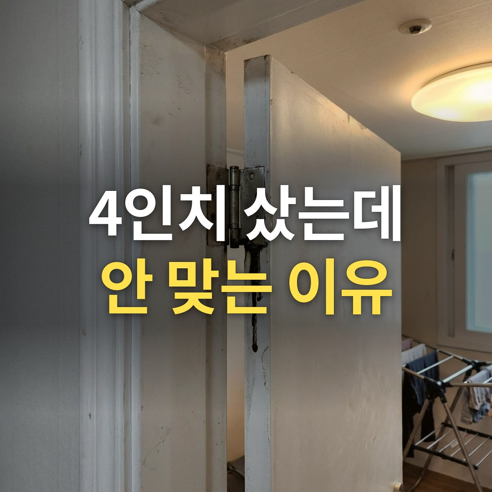
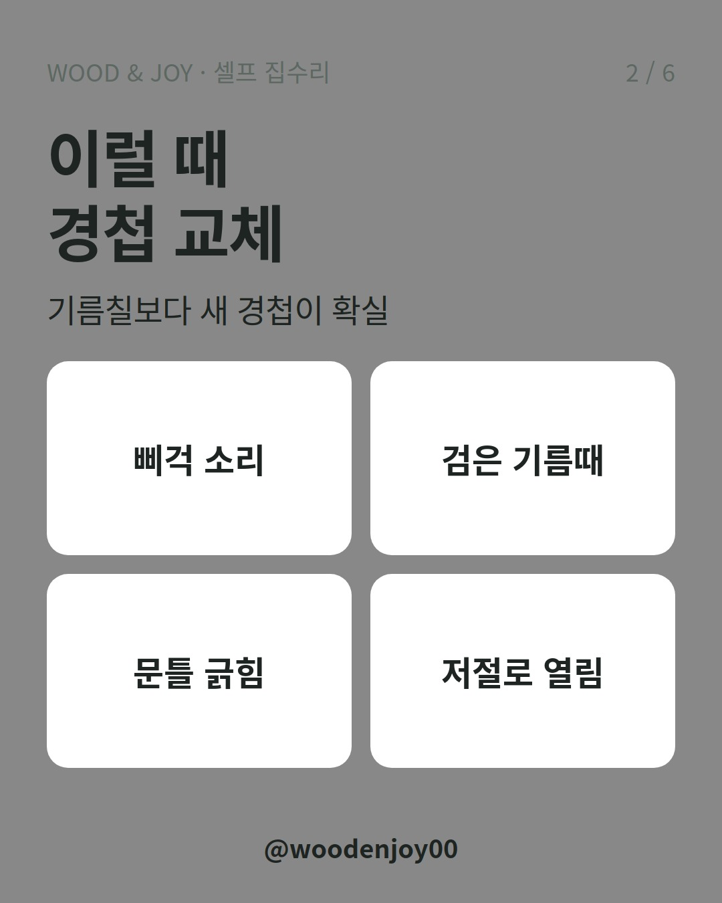
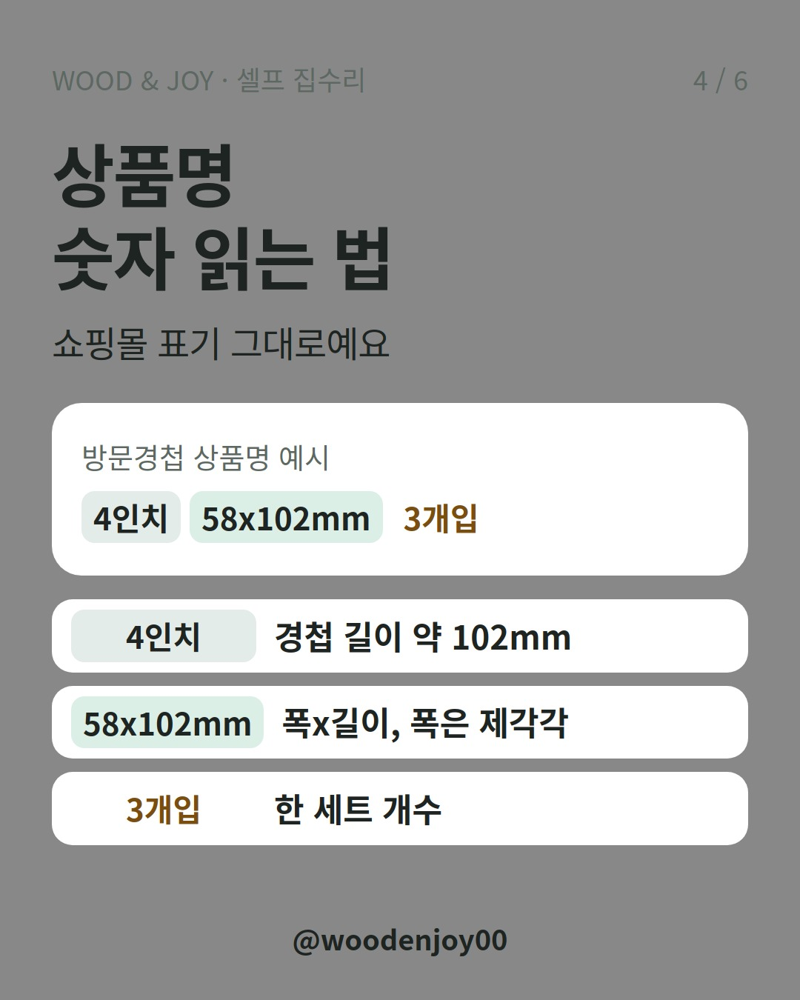
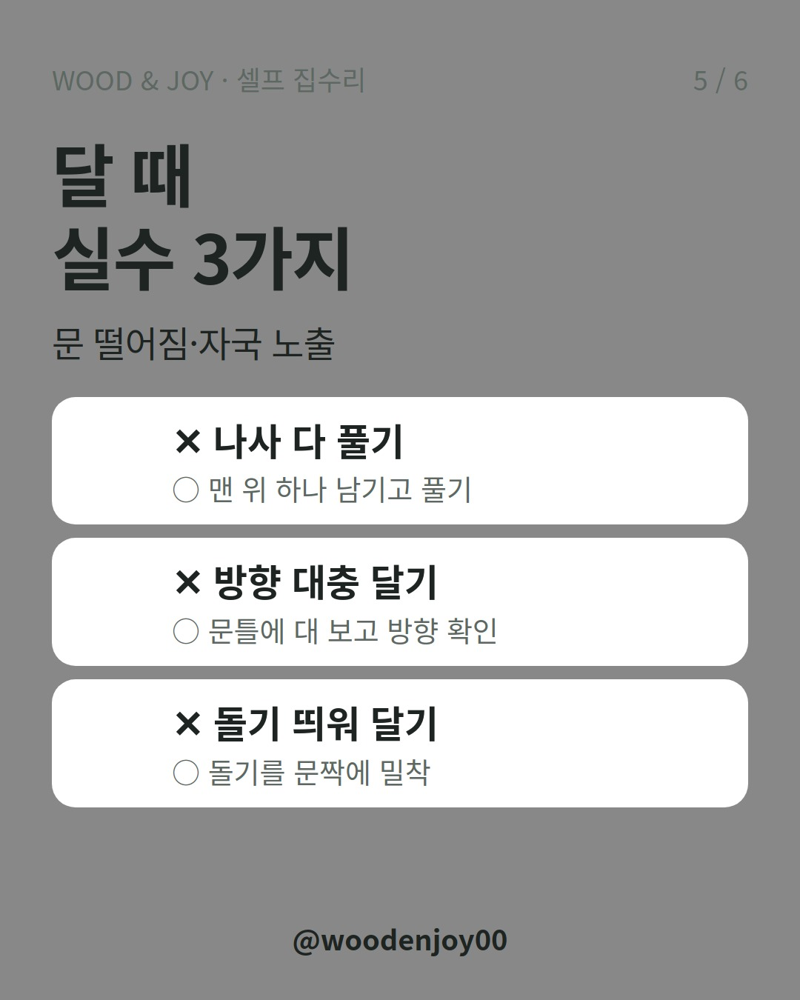

이 포스팅은 쿠팡 파트너스 활동의 일환으로, 이에 따른 일정액의 수수료를 제공받습니다.
방문 열 때마다 삐걱대고 경첩 틈으로 검은 기름때가 비치나요? '4인치'만 보고 경첩을 사면 폭이 안 맞을 수 있어요. 이지경첩을 거꾸로 달면 옛 나사 자국이 그대로 드러나고요.
한 줄 결론: 문 옆면에 홈이 없으면 이지경첩, 홈이 있으면 같은 모양의 일반경첩을 사세요. 기존 경첩 폭(mm)과 개수를 재 가고, 박기 전엔 방향을 문틀에 대 보세요.

이런 증상이면 기름칠보다 새 경첩이 확실해요. 경첩이 닳으면 문이 조금씩 처지면서 뻑뻑해지거든요.

문을 열고 경첩이 붙은 문 옆면을 보세요.
이지경첩은 문 쪽 날개와 문틀 쪽 날개가 겹치지 않게 나뉘어 있어요. 그래서 일반경첩의 절반 두께로 달리고, 홈이 없어도 문틈이 3mm 안팎으로 유지돼요.
아니에요. 쇼핑몰의 4인치는 길이(약 102mm)예요. 폭은 제품마다 달라서 같은 방문용 4인치도 58x102mm, 88x102mm처럼 나뉘어요.
기존 경첩을 하나 떼어 폭을 자로 재 가세요. 개수도 세어 보세요. 3개 1세트와 2개입이 따로 팔려요. 색상은 다른 문과 맞출지 정하고 사면 돼요.
홈 없는 문에 4인치 이지경첩을 다는 거라면 방문경첩 이지경첩 4인치 (3개입)처럼 한 세트로 사면 문 하나를 한 번에 바꿀 수 있어요.

일반경첩은 돌려 달아도 문제가 없어요. 이지경첩은 반대로 달면 나사못 자국을 다 가리지 못해요. 박기 전에 문을 문틀에 대 보고 방향부터 맞추세요.
이지경첩에는 문짝과 문틀 간격을 잡아 주는 돌기도 있어요. 이 돌기가 문짝에 딱 붙도록 삐뚤어지지 않게 달아야 해요.

손잡이도 갈 생각이면 문고리 교체 전 백셋부터 재세요, 60·70mm 틀리면 반품을 먼저 보세요. 싱크대 문 경첩은 종류가 완전히 달라요. 싱크대 경첩 사기 전에, 아웃도어·인도어부터 확인하세요
| 구분 | 이지경첩 | 일반경첩(홈따기) |
|---|---|---|
| 문 옆면 홈 | 없음 | 있음 |
| 두께 | 일반경첩의 절반 정도 | 두꺼움 |
| 맞는 문 | 가벼운 방문(요즘 많은 ABS 문 등) | 무거운 문, 대형 중문, 히든도어 |
| 셀프 / 업체 | 기존 구멍에 그대로 달면 셀프 가능 | 홈을 새로 파야 하면 트리머가 필요해서 업체 상담 |
Q. 이지경첩은 처지지 않나요?
문을 잡는 면적이 일반경첩의 절반 정도라 무거운 문에서는 처질 수 있어요. 대형 중문이나 히든도어는 경첩을 하나 더 달거나 일반경첩을 쓰는 쪽이 안전해요.
Q. 가격은 얼마쯤인가요?
2026년 11월 검색 기준으로 방문용 이지경첩 4인치 3개입을 4,500~5,500원에 파는 곳이 있었어요. 판매처·재질·배송비에 따라 달라요.
여러분 집 방문 옆면엔 홈이 있나요? 댓글로 알려 주세요.